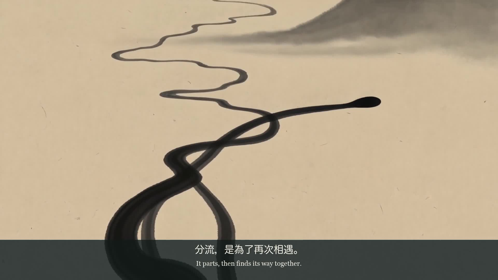
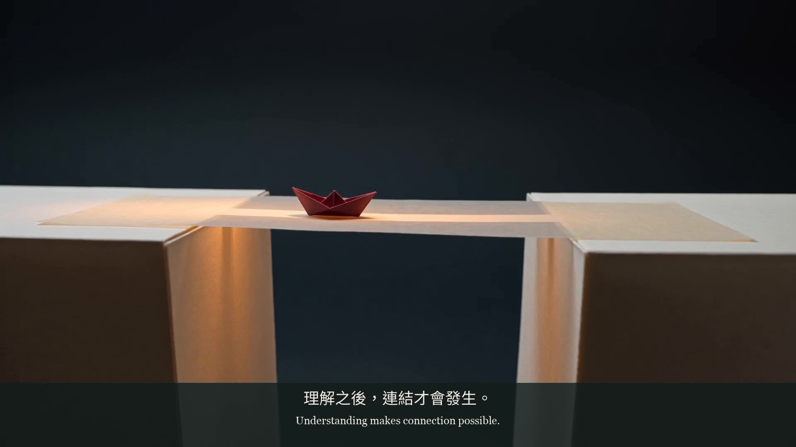

水無常形
No Fixed Form
水遇到石頭，故事沒有停下來。從「兵無常勢，水無常形」出發，以分流與重新匯合，讓抽象的「因應變化」成為可以跟隨的動作。
作品呈現：文學閱讀 → 視覺比喻 → AI 分鏡生成 → 聲音與雙語字幕剪輯。
JERRY LAI · INDEPENDENT CREATIVE STUDIES
Ideas into moving stories.
把閱讀變成觀點，
把觀點做成看得見的作品。I connect literary ideas, audience questions and AI-assisted production through short visual stories.
我是 Jerry Lai／傑瑞賴。
這三支短片，是我將經典重新讀進當代，
再以 AI 協作完成影像敘事的完整作品。Three self-initiated films. One connected practice:
read carefully, frame an idea, and carry it through to a finished piece.

No Fixed Form
水遇到石頭，故事沒有停下來。從「兵無常勢，水無常形」出發，以分流與重新匯合，讓抽象的「因應變化」成為可以跟隨的動作。
作品呈現：文學閱讀 → 視覺比喻 → AI 分鏡生成 → 聲音與雙語字幕剪輯。

Know the Ground
在決定怎麼說之前，先問作品為誰而做。以「知彼知己，百戰不殆」為閱讀起點，轉譯為對創作立場、受眾需要與情境的理解；受眾是溝通對象，不是敵人。
作品呈現：受眾提問 → 敘事觀點 → AI 分鏡生成 → 節奏、聲音與字幕整合。

Value Made Visible
以「不戰而屈人之兵」提出一個當代創作問題：能否透過清楚呈現價值，讓人願意理解？這裡探討連結與說服，以觀眾能自行判斷為前提。
作品呈現：命題轉譯 → 價值敘事 → AI 分鏡生成 → 完整影音交付。
三件作品皆為自主創作，使用 AI 協作完成概念整理、動態影像生成與後製流程。案例頁區分文學原句、原創改寫及實際製作方法，讓作品和過程一起接受檢視。每件附成片、雙語文字與製作紀錄。
These are independent, AI-assisted studies. Source quotations, original interpretations and production methods are identified within each case. Each case includes a finished film, bilingual writing and production notes.
從文章、品牌資料或 brief 中辨認核心命題，區分已知事實與待確認資訊，再提出受眾看得懂的故事切角。Turn source material into a clear premise, with the audience and open questions in view.
將主題拆成動作、鏡位與節奏，整理分鏡和生成提示，以具體影像協助團隊判斷方向，而非只停在抽象形容。Translate an idea into shots and prompts that give the team something concrete to review.
整理生成素材，完成字幕與聲音剪輯，並保留流程、版本與交付文件。工具與格式先確認，讓後續接手有跡可循。Bring image, text and sound together, with documented files and agreed handoff formats.
我希望加入重視閱讀、觀察與實際創作的團隊。這組作品是我的起點：願意解釋選擇，也願意依真實需求重新思考。
I would welcome a conversation about the ideas, choices and production decisions behind these films—and how this approach could contribute to your work.
Open Questions — AI podcast short
Beneath the Quiet — Earth science explainer
Independent samples by Jerry Lai.